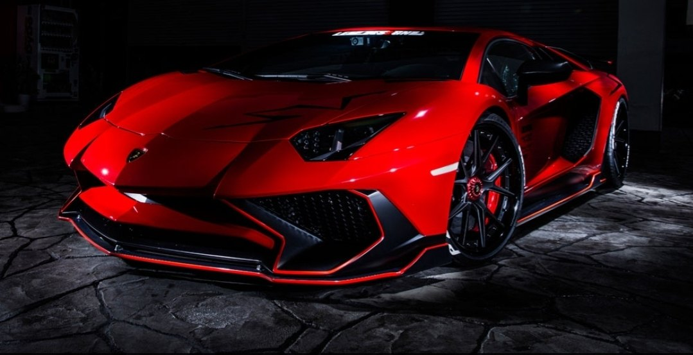
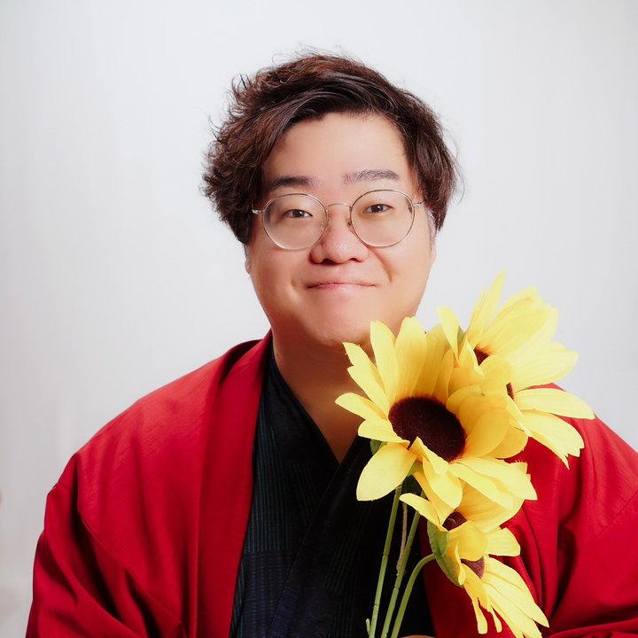

WEB & APP
サイトと会員の仕組み
このサイトや、会員のみなさんが使う予約・連絡の仕組みを整えています。


The Crew
裏方・仕組みづくり担当
運転するのが、好きだ。行き先より、ハンドルを握っている時間がいちばん楽しい。
眺めるより、走らせたい派です。
車の楽しみ方は人それぞれ。いじる人、磨く人、集める人。わたしは運転するのが好きなタイプです。
知らない道を走って、気づいたら遠くまで来ている。そういう時間が、頭を空っぽにしてくれます。だから那須のような「走って行きたくなる場所」に車好きが集まる、というAIKOUCARの考え方に、すぐ乗りました。
SOMEDAY
いつか、赤いランボルギーニに乗る。
これがわたしの、車についての目標です。いまはまだ「いつか」ですが、口に出して決めておくことにしました。
その日が来たら、最初の行き先は那須のカフェ。みなさんに見てもらうつもりです。
表には出ませんが、仕組みをつくっています。
凱島さんたちが「やりたい」と言ったことを、続けられる形にするのがわたしの担当です。車好きが安心して集まれる場が、長く続くように。
WEB & APP
このサイトや、会員のみなさんが使う予約・連絡の仕組みを整えています。
PLANNING
クラウドファンディングや会員特典など、無理なく続けられる形を考えています。
SUPPORT
資料づくりや段取りなど、メンバーが車とイベントに集中できるよう支えています。
本業は、経営者の相談役です。
HiMaWaRi合同会社の代表として、AI時代の経営者専属顧問をしています。これまで50業種以上の個人・法人を支援してきました。
英国王立技芸協会のフェロー（FRSA）でもあります。仕事でもプライベートでも20カ国以上を訪れ、いろいろな場所で暮らしてきました。